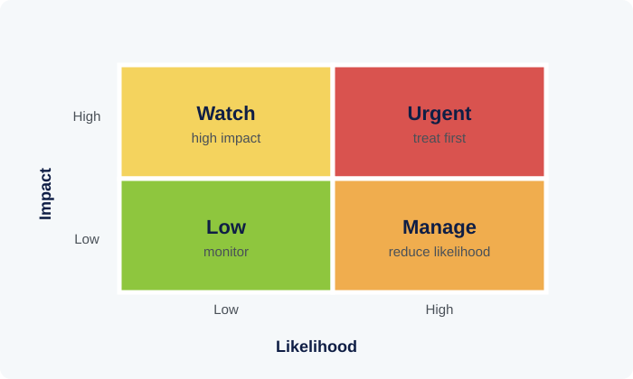

Tier 2
Risk management is the structured process of identifying what could go wrong, understanding how serious it would be, and deciding what to do about it - before it happens rather than only after.
1. What Enterprise Risk Management Is
ISO 31000, the international standard for risk management, describes risk management as a set of coordinated activities to direct and control an organization with regard to risk - not a single event or a form to fill in once a year, but an ongoing process woven into planning and operations. Its core cycle is straightforward to describe even if it takes discipline to sustain: identify risks, assess their likelihood and potential impact, decide how to treat them, and monitor how they evolve over time.
'Risk appetite' - how much risk an organization is willing to accept in pursuit of its objectives - is a foundational concept that should be set deliberately at a senior level rather than left implicit. Without an explicit risk appetite, different parts of an organization can end up making inconsistent risk decisions, some overly cautious and others overly exposed, simply because there is no shared reference point for what level of risk is acceptable.
Enterprise risk management (ERM) extends this thinking across an entire organization rather than treating risk as the concern of a single department. The insight behind ERM is that risks in different parts of an organization can interact - a technology failure can become a reputational risk, which can become a financial risk if it damages member trust - so managing risks only in isolated silos can miss how they compound.
2. Categories of Risk
Risk is commonly grouped into categories to make it manageable: strategic risk (threats to achieving long-term objectives, such as a shift in policy or market conditions that undermines the current strategy), operational risk (failures in day-to-day processes, systems, or people - from a system outage to a processing error), financial risk (exposure to market movements, credit default, or liquidity shortfalls), compliance risk (breaching laws or regulations), and reputational risk (damage to public trust and standing, which for a member-facing institution can be one of the most consequential categories of all).
These categories are a useful organizing tool, not a rigid classification - a single incident often spans more than one category simultaneously. A data breach, for instance, is simultaneously an operational risk (a system or process failure), a compliance risk (potential breach of data protection obligations), and a reputational risk (loss of member trust), which is exactly the kind of interaction enterprise risk management is designed to catch.
Emerging risk categories deserve particular attention precisely because they are less familiar: cyber risk, climate-related risk, and risks associated with rapid technological change do not always fit neatly into an organization's existing risk categories or historical experience, which means they can be under-assessed relative to more familiar, well-understood risks.
3. The Risk Management Process in Practice
A risk register is the practical tool most organizations use to operationalize the ISO 31000 cycle: a structured log of identified risks, each with an assigned owner, an assessment of likelihood and impact, a description of existing controls, and a plan for further treatment where needed. Its value comes from being actively maintained and reviewed, not from existing as a static document produced once for an audit.
Likelihood and impact are typically assessed on a simple scale (for example, low/medium/high, or a numeric 1-5 rating) and plotted on a matrix, which helps prioritize attention: a risk that is both highly likely and high-impact clearly demands more urgent treatment than one that is unlikely and low-impact, even though both may appear on the same register.

Risk treatment options generally fall into four types: avoid the risk (stop the activity that creates it), reduce it (add controls that lower likelihood or impact), transfer it (such as through insurance or contractual arrangements), or accept it (a deliberate decision that the risk is within appetite and does not need further action). Choosing 'accept' is a legitimate option when made deliberately and documented - the problem arises when risks are accepted by default, through inaction, rather than through a conscious decision.
4. Building a Risk-Aware Culture
The 'three lines of defense' model, widely used across financial and public institutions, clarifies roles: the first line is operational management, who own and manage risk directly in their daily work; the second line includes risk management and compliance functions, who set policy, provide oversight, and monitor the first line; the third line is internal audit, which provides independent assurance that the first two lines are functioning as intended. Confusion about which line is responsible for what is a common source of risk management failure.
A frequent criticism of risk management in practice is that it becomes a paperwork exercise - registers updated to satisfy an audit rather than to genuinely inform decisions. A risk-aware culture is the antidote: staff at all levels understanding that surfacing a risk early is valued, not treated as an admission of failure, and that risk registers are living tools that inform real operational and strategic choices.
Psychological safety, discussed in the Innovation & Entrepreneurship category in a different context, matters here too: staff who fear blame for raising a concern will tend to stay quiet until a risk has already become a realized problem, which is precisely the outcome risk management is meant to prevent.
Knowledge Check: Risk Management
10 questions. Finish the reading above, then take the test to check your understanding.
Question 1 of